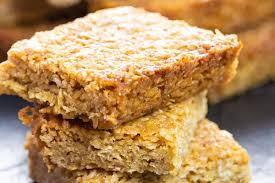

Flapjacks

Description
Flapjacks are a deliciously simple, chewy, and satisfying treat, perfect for a quick snack or
breakfast on the go. Made with hearty oats, sweet golden syrup or honey, and a touch of butter,
they strike the perfect balance between crunchy edges and a chewy middle. Whether you prefer
them plain or packed with extras like nuts, dried fruit, or chocolate chips, flapjacks are easily
customisable to suit any taste. This classic recipe captures the essence of traditional British
flapjacks: comforting, wholesome, and irresistibly moreish.
Ingredients
- 200g rolled oats
- 125g unsalted butter
- 125g light brown sugar
- 4 tbsp golden syrup
Steps
- Preheat the Oven: Start by preheating your oven to 180°C (160°C fan) or
350°F. Line a baking tray (about 20x20 cm) with parchment paper for easy removal.
- Melt the Butter, Sugar, and Syrup: In a saucepan, melt the butter, light brown
sugar, and golden syrup over low heat, stirring occasionally until the sugar dissolves and the mixture is smooth.
- Combine with Oats: Remove the saucepan from the heat and add the rolled oats.
Stir well until the oats are fully coated in the buttery mixture. If you’re adding extras like
dried fruit, nuts, or chocolate chips, fold them in now.
- Press into Tray: Pour the oat mixture into the lined baking tray, pressing
it down firmly and evenly with the back of a spoon to ensure an even bake.
- Bake: Place the tray in the preheated oven and bake for 20-25 minutes, or
until the edges turn golden brown. If you prefer chewier flapjacks, bake closer to 20 minutes;
for a crispier texture, go for 25 minutes.
- Cool and slice: Remove the tray from the oven and let the flapjacks cool
for about 10 minutes in the tray. While still warm, cut them into squares or bars, then allow
them to cool completely before lifting them out.